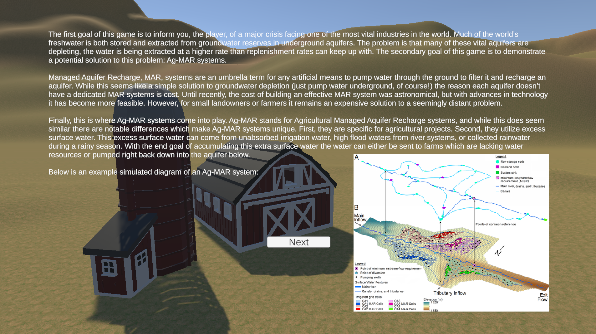
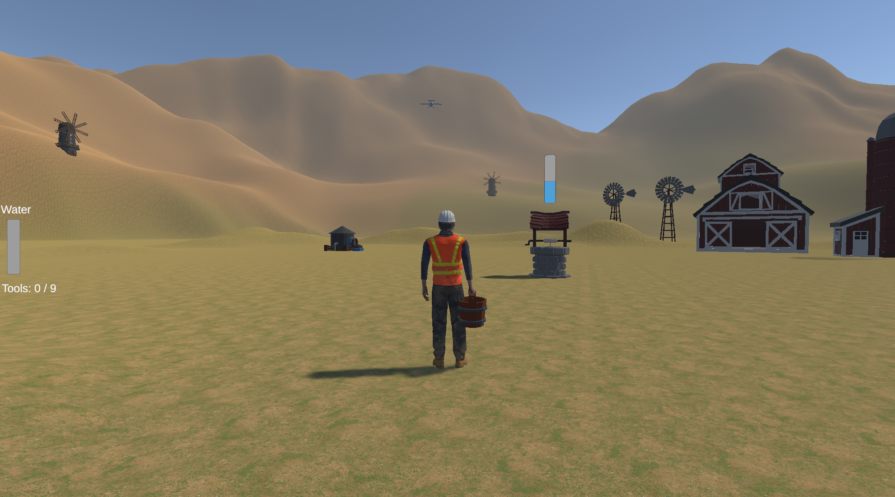
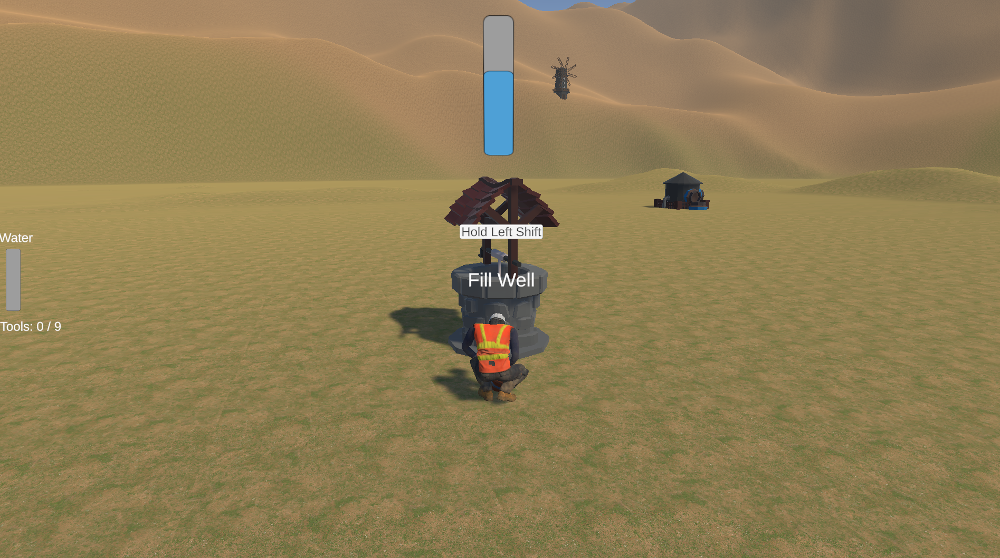
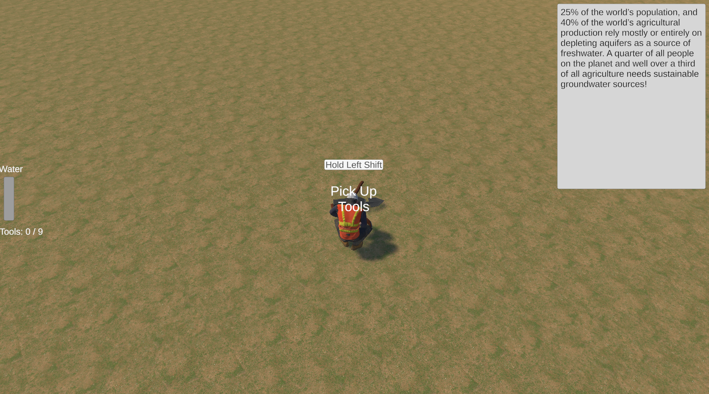

Purpose
The concept of this game was created as a collaboration between me and Alex Johnson, my friend who is studying for a political science major. A class that he has taken required him to make a final project and video games was one of the mediums accepted for submission. It was a collaboration where I have done all the coding and design of the game, while Alex has created the idea and researched the information that the educational part of this video game is conveying. The game is set on a farm and the purpose of the game is to manage time while repairing an Ag-MAR system and preventing the farm’s aquifer from drying up.
Learning Experience
This project had a deadline and not a lot of time was allotted for the development. This meant that it was a learning experience for me to learn how to prioritize the important requirements for a system in a time pressured development cycle. Some features had to be dropped in an effort to get it done on time, however all the main and most important features function well in the game. In addition it was also a new experience for me to make a project where all requirements are not made by me.
Outcomes
In the end, I created a simple game that is effective as both an educational product and as an entertainment product. It was a new experience for me to make an educational game and there were certain decisions that I made in this project that I would not make in a non educational game project. For example when the player is picking up tools, there is an informational text box that shows up. That led to the pick up time for the tools to be much longer than what an average non educational game to have.
Game Design
The Game Design was successful in this game considering its simplicity. There are two main systems at work in the game, the water aquifer depletion and the Ag-MAR repairing system.
The water aquifer depletion makes it so the player has to refill the well at his farm otherwise they will lose the game. This simple action adds stakes to the game as the player is forced to do something in order to not lose the game.
The Ag-MAR repairing system requires the player to gather 9 tools and repair the Ag-MAR to win the game. This system gives the player a goal to complete. However, they cannot just focus on picking up tools, as that takes time and the aquifer might deplete and they will lose the game.